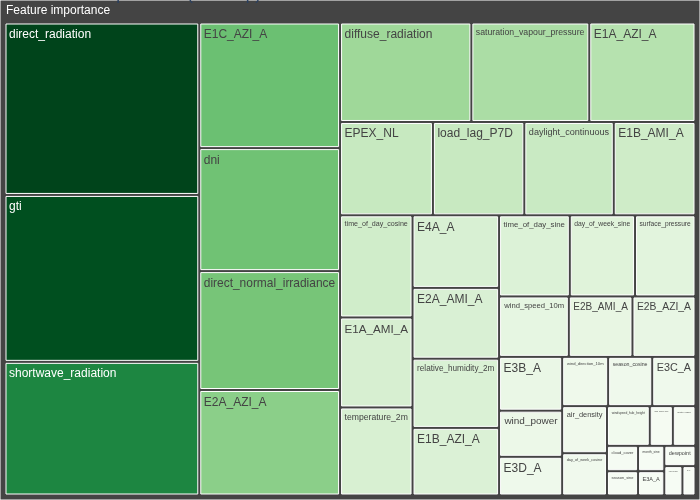
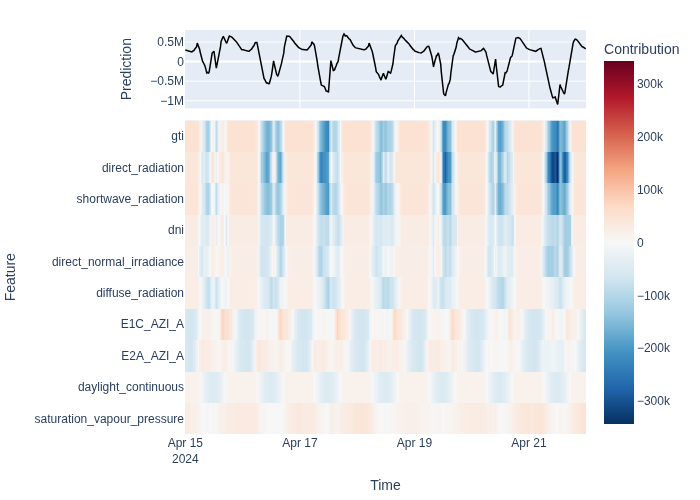
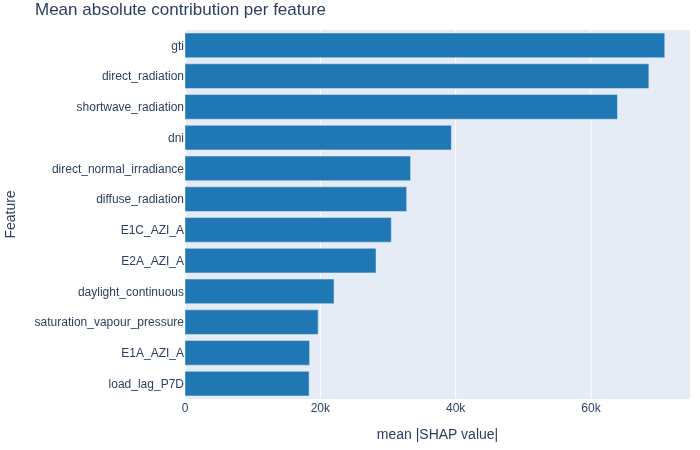
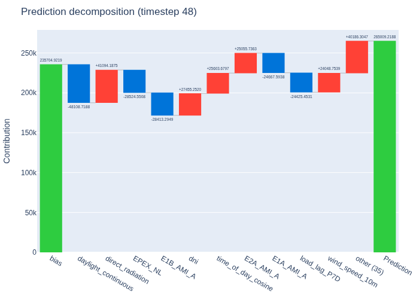

Model Explainability#
Understand why a forecasting model makes the predictions it does, using feature importance scores and per-timestep SHAP contributions.
What you’ll learn:
Inspect global feature importance with an interactive treemap
Compute per-timestep feature contributions (SHAP values)
Visualize contributions with heatmaps, waterfall charts, and bar charts
Note
This tutorial uses a small data slice for fast execution.
See examples/benchmarks/ for production-scale runs.
Key API references:
ExplainableForecaster
· ContributionsPlotter
· FeatureImportancePlotter
Train a model#
We reuse the same setup as the Forecasting Quickstart — train a GBLinear model on 45 days of Liander data.
from datetime import datetime, timedelta
from openstef_core.testing import load_liander_dataset
from openstef_core.types import LeadTime, Q
from openstef_models.presets import ForecastingWorkflowConfig, create_forecasting_workflow
from openstef_models.presets.forecasting_workflow import GBLinearForecaster
dataset = load_liander_dataset()
train_start = datetime.fromisoformat("2024-03-01T00:00:00Z")
train_end = train_start + timedelta(days=45)
forecast_end = train_end + timedelta(days=7)
train_dataset = dataset.filter_by_range(start=train_start, end=train_end)
predict_dataset = dataset.filter_by_range(
start=train_end - timedelta(days=14),
end=forecast_end,
)
workflow = create_forecasting_workflow(
config=ForecastingWorkflowConfig(
model_id="explainability_gblinear",
model="gblinear",
horizons=[LeadTime.from_string("PT36H")],
quantiles=[Q(0.5), Q(0.1), Q(0.9)],
target_column="load",
temperature_column="temperature_2m",
relative_humidity_column="relative_humidity_2m",
wind_speed_column="wind_speed_10m",
radiation_column="shortwave_radiation",
pressure_column="surface_pressure",
verbosity=0,
mlflow_storage=None,
gblinear_hyperparams=GBLinearForecaster.HyperParams(n_steps=50),
)
)
result = workflow.fit(train_dataset)
print("Training complete.")
print(result.metrics_full.to_dataframe())
Training complete.
quantile R2 observed_probability
0 0.5 0.809857 0.475694
1 0.1 0.486778 0.113889
2 0.9 0.472457 0.903704
Feature importance#
Feature importance scores rank features by their overall impact on the model’s
predictions. The FeatureImportancePlotter treemap visualization groups features by magnitude — larger
tiles represent more influential features.

Feature contributions#
While feature importance is a global summary, feature contributions explain individual predictions. For each timestep, they decompose the prediction into additive terms: one per feature plus a bias.
GBLinear models provide exact SHAP values, making this decomposition faithful
to the model’s internal logic. Use ContributionsPlotter
to visualize contributions as heatmaps, bar charts, or waterfall charts.
from openstef_models.explainability import ContributionsPlotter
contributions = workflow.model.predict_contributions(predict_dataset, forecast_start=train_end)
print(f"Contributions shape: {contributions.data.shape}")
print(f"Features: {contributions.data.columns.tolist()[:5]} ... ({len(contributions.data.columns)} total)")
Contributions shape: (672, 46)
Features: ['temperature_2m', 'relative_humidity_2m', 'surface_pressure', 'cloud_cover', 'wind_speed_10m'] ... (46 total)
Heatmap — contributions over time#
Each row is a feature, each column is a timestep. Red cells indicate positive contributions (pushing the prediction up), blue cells indicate negative ones. The prediction line overlays the total.

Bar chart — average feature impact#
Mean absolute contribution per feature, ranked from most to least impactful. This gives a complementary view to global importance — here you see which features actively moved predictions during the forecast window. If certain features dominate unexpectedly, consider adjusting the pipeline via Building a Custom Pipeline.

Waterfall — single timestep decomposition#
The waterfall chart breaks down one specific prediction into its components. Starting from the bias (baseline prediction), each feature adds or subtracts from the final value.

Next steps#
Hyperparameter Tuning with Optuna — use explainability insights to guide which parameters to tune.
Building a Custom Pipeline — fine-tune feature engineering based on what the contributions reveal.